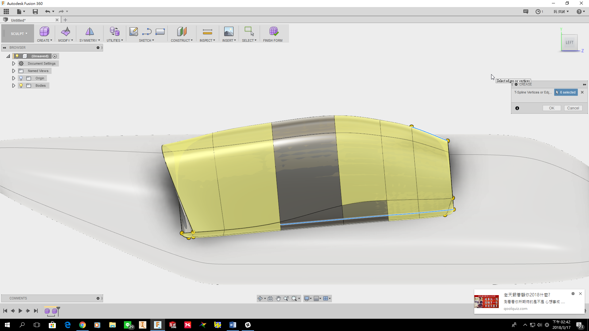

Autodesk_Fusion_360_官方暨登入網站：
https://www.autodesk.com/products/fusion-360/students-teachers-educators
01_Fusion_360_使用感想：
因為兼職工作關係有接觸到航空載具機體建模的問題。長期的習慣都是以 Solidworks、Catia 等進行參數式以及疊層拉伸等建模，精密的翼片以及機體流線。在建構複雜且精準度要求極高的物件時，參數式運算以及足夠的條件成為必要，速度也是隨著對運算操作的熟練而有所進程。
我接觸 Fusion_360 時事約莫兩年前，在更早以前有嘗試用過 Bland 以及 3D Max、Adobe系列等軟體。目的是要快速的建構簡單直覺的實體造型，不需要太多的參數輔助以及條件約束，曾經用過去建構認真系列機體的方式，但是總覺得勞師動眾、事倍功半，遂嘗試尋找更快速建模的工具。
Fusion_360 在建模上可以運用以往 Dassault 系統等工程建模軟體之下的邏輯，由點→線→面逐一進行建置但是它有更吸引我的部分即"快速建模"。由單個或多個實體粗胚進行對點、對線、對面的動態調整，而且會自動偵測破面以及空間錯誤、扭曲等等(遭些年接觸 3D_Max 並無該項功能)；內建還有提供 CAE 的簡單分析模組，雖然精度相對於 Abquas 或是 ANSYS 專業軟體來說，還有一段距離但也算是同期軟體一響很突出的功能；再者還有提供 CAM 以及 3D_Printer(好像要加裝其他模組，逕自測試時沒有辦法執行) 的路徑模擬，這點我覺得是一點比 Onshape 來的精緻的部分；最最貼心的部分是除了兩個軟體(Onshape&Fusion_360)每次階段存檔時，都會自動在檔名後加上可編輯的尾標外，就是"可以離線操作"這是相對於Onshape來講的一大優勢。
當時開始使用 Fusion 時主要是因為想要嘗試縮短基底疊拉伸的時間
